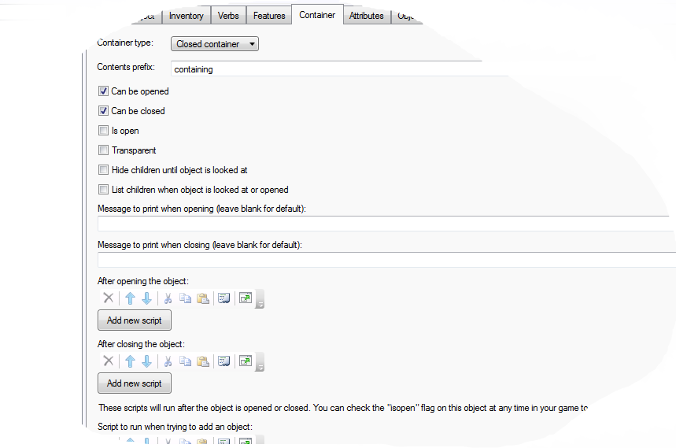
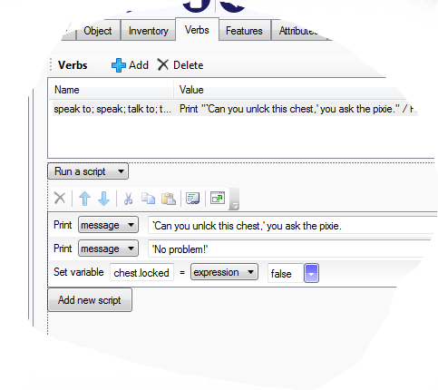
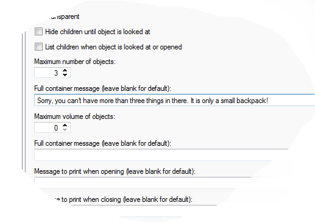
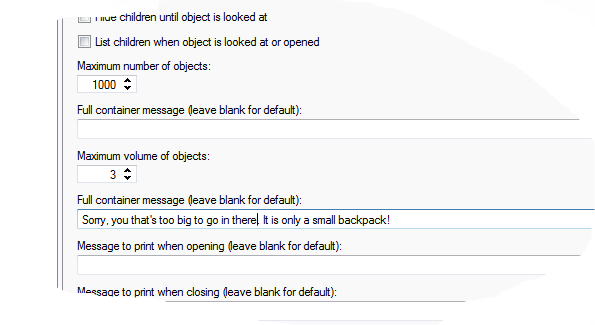
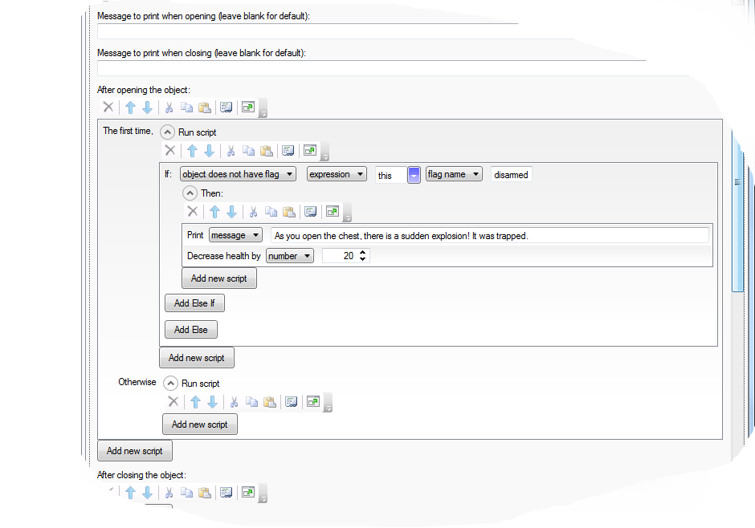
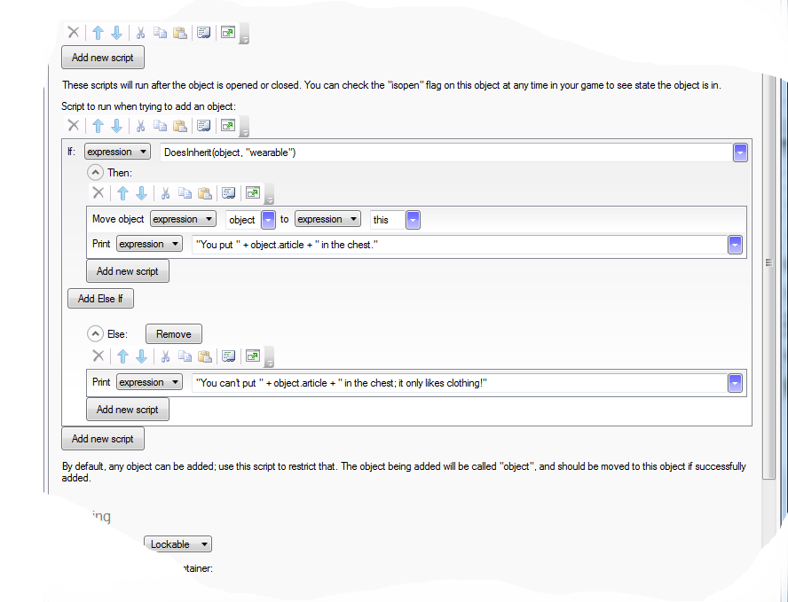
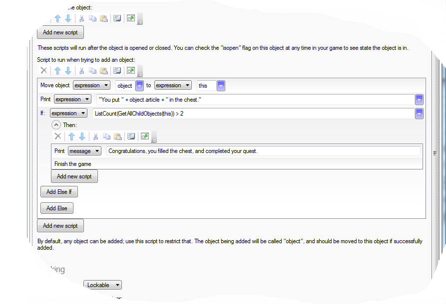

Using Containers
Containers have been a feature of text adventures from the very early days, and are simple to implement in Quest.
A container is a type of object, so the first thing to do is to create an object. Let’s say we want to create a chest.
To make it a container, go to the Featurees tab of the object, and tick “Container: …”. A new tab will appear; go to the Container tab, and select the type of container that you want.
Container: Your basic container. We will look in detail in a moment.
Closed container: As above, but it starts closed.
Surface: A surface is a special container that you might not think is a container at all. It is really something you can put stuff on (like a table or shelf), rather than inside, but for most purposes it acts like a container. Objects on a surface are always visible and reachable, and obviously a surface cannot be closed or locked. If you select “Surface”, you will see there are far less options.
Limited container: A limited container can only hold a certain amount. We will look further later.
Openable/closable: A object that is not a container, but can be opened and closed; a door or window. This is quite different to a container, and not discussed on this page (but see here).
Container
We want our chest to be a container, so select that option.
at this point it is just a case of making some choices. Can it be opened and closed? Is it already open? Is it transparent (player can see the contents even if closed, but not get it)?
There are also scripts that will trigger when the chest is opened (perhaps the chest is trapped), is closed or an item is added (see later).

Locked Container
Be careful using locked containers. The “Key hunt” is something of a clique in computer games.
That said, we will set up our chest as lockable. Make sure it starts closed.
In the “Locking” section, select: “Lockable”. Again, you will see a bunch of options, and two new script options. The important part is the key. You can set up to five different objects to be keys. Select the number, and a number of dropdown lists will appear. Simply select the key object from the list.
By default, the player will need to have all they keys to unlock the container. As of Quest 5.8, you can untick the “Require all keys” check box, and the player will be able to unlock the container with any of the keys.

Alternatively, you may require some event to unlock the chest. Perhaps the player has answered a riddle or moved the iron beam that was keeping the lid closed. In this case we will say the player has to talk to the pixie, who will magically unlock the chest. Set the number of keys to zero and untick the “Require all keys” check box (if using earlier versions of Quest you will need to set the number of keys to 1, and create a dummy key the player cannot get to).
Set up the script like this:

Limited Container
Again, you need to be a little bit careful here. The limited container is something of a text adventure clique, and can end up just annoying the player.
Let’s say we have a backpack, but it is not very big, and we want to limit how much the player can put in there (by the way, you can allow the player to wear the backpack just by making it wearable).
This time we need to set it to be a “Limited container”. We get a warning, now, telling us we also need to activate the feature for the game. Go to the Features tab of the game object, and tick the “Inventory limits:… “ check box. Go back to the object, and some new options are visible.
Quest allows you to limit a container by count and by volume. The player will only be able to add an item to the container if the container has less than the maximum number of items and it has enough volume for the new item. By default the volume of an item is 0, and if you are not interested in volumes, you can just leave everything to the default. We will do that for our backpack for now. Set the “Maximum number of objects” to some suitable number and, if you want, put in a message for when it is full.

If you want to limit the volume, you need to set the “Maximum number of objects” to some really big number, and then set the volume limit.

You will also need to set the volume of any object in your game that the player can pick up - including any containers.
You can use any units that are convenient; it does not matter as long as you are consistent across your game. Note that if you put one container inside another, the volume of the inner container will be its own volume plus the volume of everything in it (Quest assumes containers are floppy bags that expand to hold things, rather than rigid boxes with fixed volumes).
Advanced
Let’s quickly look at scripts.
It’s a trap!
Suppose the chest has a trap that will cause a small explosion when it is opened. We only want it to fire the first time it is opened, and if the player disarms it (which we will flag with an attribute called “disarmed”), it will not fire. Here is how we might create the script:

This is the code behind it:
firsttime {
if (not GetBoolean(this, "disarmed")) {
msg ("As you open the chest, there is a sudden explosion! It was trapped.")
DecreaseHealth (20)
}
}
Note that “this” is a special value that refers to the object the script is attached to.
A fussy chest
Limited containers are a special type of fussy containers; they will refuse to accept a new object under certain conditions. For other containers, we can add a script to make the container only accept objects using other criteria. In this example, the player will only be able to put clothing in the chest:

if (DoesInherit(object, "wearable")) {
MoveObject (object, this)
msg ("You put " + object.article + " in the chest.")
}
else {
msg ("You can't put " + object.article + " in the chest; it only likes clothing!")
}
The basic principle is straightforward. An if command is used to test the condition of the object. If it is okay, we move the object to the container, and tell the player. Otherwise, we tell the player it failed.
Keeping count
We can use a similar script to track how many items are in the chest, and to react accordingly. In this example, the game finishes when three or more things are put in the chest. The player might put some items in the backpack, and then put the backpack in the chest, so the total could be more than three; this is a good general princple, always check if the player has exceeded a certain amount rather than got a certain amount.

MoveObject (object, this)
msg ("You put " + object.article + " in the chest.")
if (ListCount(GetAllChildObjects(this)) > 2) {
msg ("Congratulations, you filled the chest, and completed your quest.")
finish
}
Note that if you use this script, you must move the object to the container yourself and you must keep the player informed.
Also note that we use object.article in the message, so if the player puts a pair of trousers in the container, it will say “them” not “it” (as long as the trousers are set up as “Inanimate objects (plural)”).
Better messages
You might just want a better message when the player puts things in the chest (just use the first part of the last script, up to, but not including, the if).